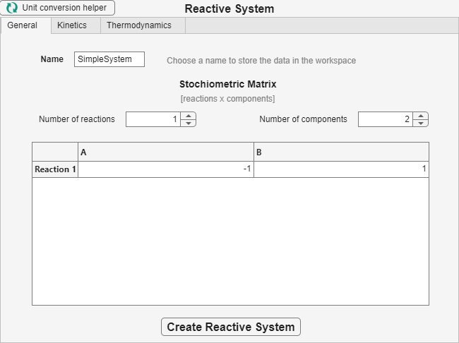
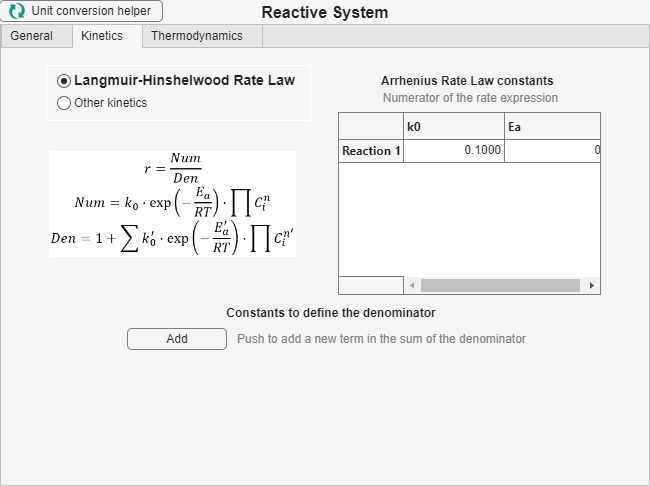
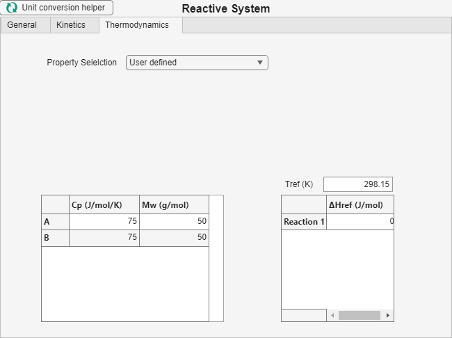

Work through General, Kinetics, and Thermodynamics before creating the named system.
Write down the component order, one balanced stoichiometric row per reaction, the rate-law data, and the thermal-property source. The same order is used throughout the session.
On General, enter a name, set the number of components and reactions, and fill the stoichiometric matrix. Negative entries are reactants and positive entries are products. Press Create Reactive System after completing the other tabs.

The name stores the completed definition for selection in the main window. Changing either count resizes the visible matrix.
On Kinetics, choose the displayed rate-law option and enter the pre-exponential constant and activation energy for each reaction. The Add button exposes adsorption or inhibition terms when they are needed. The alternative option provides fields for another rate law.

On Thermodynamics, choose whether properties are imported or entered by the user. User-defined data include heat capacities, molecular weights, the reference temperature, and reaction enthalpies.

Choose the heat-capacity option that matches the data available. Complete every component and reaction row before creating the system.
Create a feed Stream with the same number and order of components.